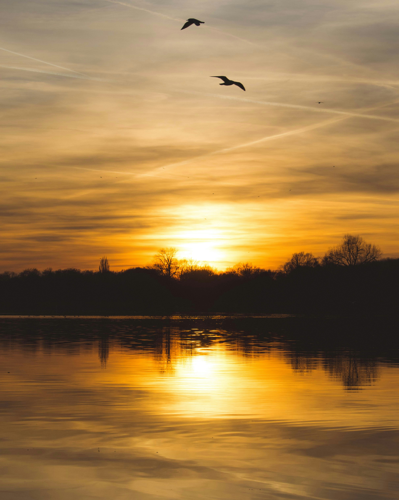

My Traveling Blog
Visited: Cox's Bazar
- Suarez
- Messi
- Neymar
Sunset beside River
The Visited River Side
Riverside, The Heart of Southern California, harmoniously blends historical charm with modern vibrancy, offering a diverse tapestry of cultural richness, scenic landscapes, and a thriving community spirit. Riverside boasts stunning mountain vistas, lush parks, and a dynamic arts scene, creating an inviting tapestry for residents and visitors alike
Where i visited
My visit to Cox's Bazar was an incredible experience. The natural beauty of the beach, the variety of activities, and the friendly locals all made for a memorable trip. If you're planning a visit to Bangladesh, I highly recommend making a stop at Cox's Bazar.